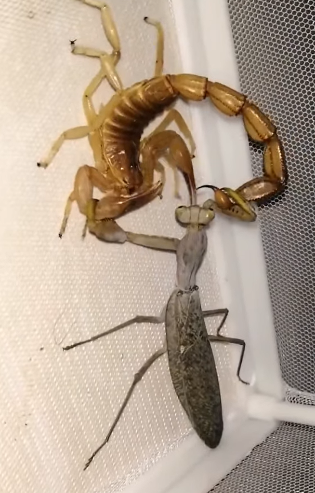
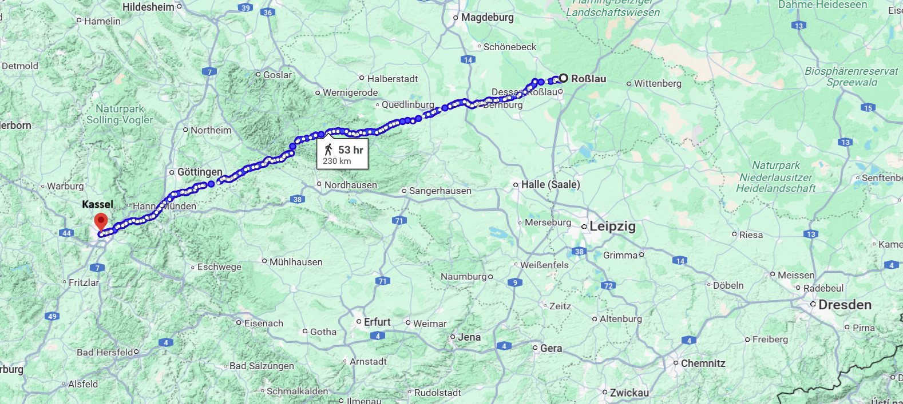
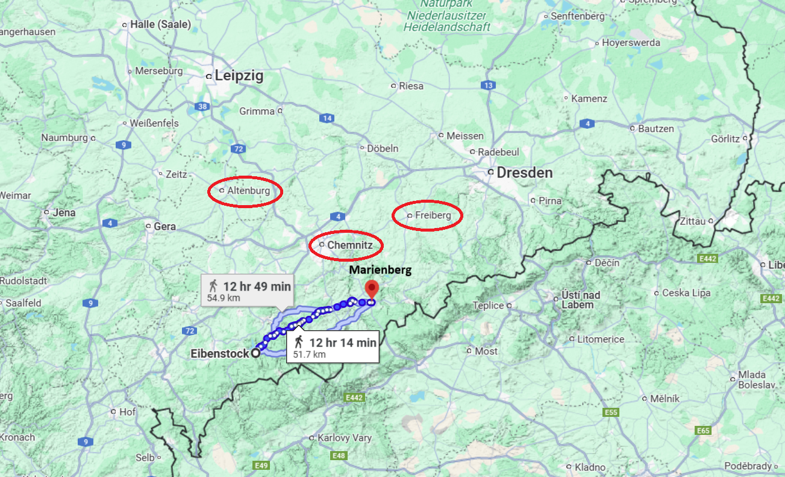
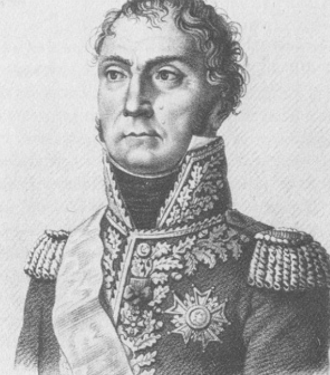
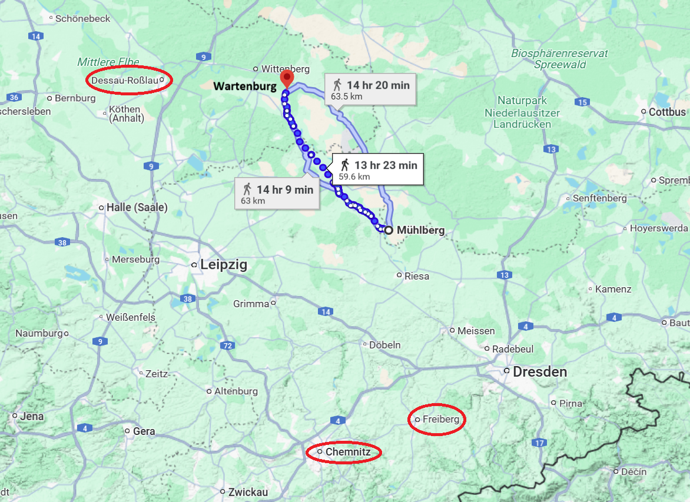

라이프치히로 가는 길 (19) - 애들 말고 어른들을 보내게
게시: 2025-03-10T06:30:00+09:00
온라인 쇼츠 컨텐츠 중에 나름 매니아층을 확보하고 있는 분야가 전갈, 지네, 거미 등의 절지류 및 곤충들끼리 싸움을 붙이는 내용입니다. 곤충판 검투사 대결이라고 할 수 있는 이 잔인한 쇼츠에 자주 등장하는 것이 사마귀입니다. 사실 사마귀는 다리도 가늘어 힘이 특별히 센 것도 아니고 독도 없어서 대단한 검투사라고 할 수는 없습니다. 그런데도 사마귀가 자주 승리하는 이유는 바로 갈고리 같은 앞발이 아니라 눈 덕분입니다. 타란튤라나 전갈처럼 무시무시한 절지류들은 대부분 눈이 좋지 않아 바로 몇 cm 앞에 뭐가 있는지 모르는 경우가 많습니다만, 사마귀는 언제나 먼저 상대의 존재와 모양, 크기 등을 파악한 뒤 언제 어디를 공격할지 계산을 하고 움직입니다. 사마귀의 싸움이 보여주는 것이 바로 정보의 중요성입니다.

(사마귀가 전갈의 꼬리 부분을 붙잡고 늘어지는 모습은 볼 때마다 희한한데, 본능적인 걸까요? 죄없는 절지류 및 곤충들을 이렇게 맞붙여 싸우게 만들고 그걸 구경시키며 돈을 버는 행위는 진짜 안 좋은 일이라고 생각합니다. 그러나 이런 컨텐츠가 계속 만들어지는 이유는 저 같은 사람이 자꾸 그런 컨텐츠에 클릭을 하기 때문이겠지요... 반성합니다.) 그런데 1813년 9월 말, 나폴레옹은 정보전에서 완벽하게 패배하고 있었습니다. 그는 블뤼허의 슐레지엔 방면군이 바우첸에서 엘스터로 5일 동안 160km를 이동하는 것을 까맣게 몰랐습니다. 이는 1812년 러시아 원정 이후 그랑다르메에 기병 전력이 크게 부족해졌다는 것에 더해, 나폴레옹이 엘베강 우안을 사실상 포기하고 엘베강을 방어선으로 삼았다는 점이 빚어낸 실패였습니다. 그러다 블뤼허가 뭔가를 꾸미고 있다는 것을 나폴레옹이 눈치챈 것은 10월 2일이 처음이었습니다. 슐레지엔 방면군 병력의 상당수가 북서쪽으로 이동했다는 것이 정보망에 걸린 것입니다. 그러나 나폴레옹은 최근에 뮈라가 점령했다가 물러난 그로스엔하임(Grossenhain) 일대로 그들이 이동하여 드레스덴을 우회 공격할 것 같다고만 생각했으며, 아예 베르나도트와 합류하기 위해 160km나 이동했다는 것은 상상하지 못했습니다. 그나마 그 날 오후 매우 심각한 소식들이 날아들었기 때문에, 나폴레옹은 어디까지나 보조 방면군에 불과한 블뤼허의 별로 대단할 것도 없는 기동 작전에 대해서 신경을 더 쓰지 못했습니다. 안 좋은 소식들이란 보헤미아 방면군이 마침내 북진을 시작하여 일부는 켐니츠(Chemnitz)를, 일부는 알텐부르크(Altenburg)를 점령했다는 보고와 함께, 라인연방의 핵심 멤버인 바이에른이 연합군 측으로 전향할 것 같다는 소문이었습니다. 뿐만 아니라 전선에서 멀리 떨어진 후방이라고 생각하고 있던 베스트팔렌 왕국의 수도 카셀(Kassel)이 연합군의 공격에 함락되었다는 소식까지 며칠 전 도착했었습니다. 나폴레옹에게 있어 어디까지나 적의 주력은 보헤미아 방면군이었기 때문에 그는 주로 남쪽 전선의 움직임에 촉각을 세우고 있었습니다. 켐니츠와 알텐부르크의 소식에 대해 그는 즉각 뮈라를 그 일대의 중간 지점인 프라이베르크(Freiberg)로 보내 그 일대의 제2,5,8군단과 함께 제4,5 기병군단의 지휘를 맡고 보헤미아 방면군의 침입에 대응하도록 했습니다.

(카셀을 습격한 베르나도트 휘하 체르니셰프의 러시아군에 대해서는 바이에른의 배신편에서 이미 다룬 바 있었지요. 로슬라우에서 무려 230km 떨어진 카셀을 습격한 것은 정말 대담한 작전이었고, 그만큼의 효과를 거두었다고 할 수 있습니다. https://nasica1.tistory.com/825 을 참조하시기 바랍니다. ) 그러나 다행히도, 당장 다음 날인 10월 3일 오전 상황이 개선되었습니다. 알텐부르크에 2만의 연합군이 입성했다는 소식은 잘못된 오보로 판명되었고, 카셀을 점령한 연합군은 한 무리의 코삭 빨치산에 불과하여 카셀은 곧 탈환되었다는 보고가 왔습니다. 그리고 켐니츠로 쏟아져 들어왔다는 연합군에 대한 소식도 과장된 것이었습니다. 이런 소식에 기분이 좋아졌는지, 나폴레옹은 바이에른이 적군쪽에 붙었다는 소문에 대해서도 제멋대로 헛소문이라고 단정짓고 말았습니다. 다른 독일 소왕국들은 몰라도 바이에른은 그야말로 전통의 동맹이었고 무엇보다 자신의 의붓아들인 외젠의 처가댁으로서, 절대 배신할 리가 없으며, 이 모든 헛소문과 가짜 보고들은 연합군측이 자신의 판단을 흐리게 만들기 위해 일부러 펼치는 정보전의 일환이라고 나폴레옹은 생각했습니다. 그런데 아시다시피 실제로 바이에른은 라인연방에서 이탈하기 직전의 상황이었고, 블뤼허 및 베르나도트와 협의된 대로 보헤미아 방면군도 10월 2일 실제로 얼츠거비어거 산맥을 넘어 진격을 시작했습니다. 나폴레옹이 모든 보고가 헛소문에 불과하다고 안심하고 있던 10월 3일, 슈바르첸베르크 휘하의 보헤미아 방면군은 이미 7만 병력을 산맥 북쪽으로 이동시켜 켐니츠 바로 남서쪽인 아이벤스톡(Eibenstock)과 마리엔베르크(Marienberg) 사이의 전선에 포진시킨 상태였고, 추가로 8만 병력이 남쪽에서 추가로 산맥을 넘기 위해 대기 중이었습니다. 10월 4일, 마침내 보헤미아 방면군 소속 오스트리아 제2군단이 정말로 켐니츠를 공격하여 점령했습니다.

(아이벤스톡과 마리엔베르크의 위치입니다. 켐니츠와 프라이베르크 남서쪽 방면인데, 이것만 보더라도 보헤미아 방면군의 이번 공격은 지난 번과는 달리 드레스덴이 아니라 라이프치히를 노린다는 것을 쉽게 눈치챌 수 있었습니다.) 헛소문이 꼭 나쁜 것만은 아니었습니다. 바로 전날 헛소문에 속아 부랴부랴 뮈라를 그쪽 일대로 보내 대비를 시킨 덕분에, 그랑다르메는 이 공격에 대해 즉각 반응할 수 있었고 로리스통의 제5군단이 켐니츠를 탈환할 수 있었습니다. 그러나 로리스통도 주변에 계속 쏟아져 들어오는 보헤미아 방면군의 위세에 눌려 북쪽으로 후퇴해야 했습니다. 이렇게 긴박하게 돌아가는 상황 속에서 나폴레옹은 블뤼허가 슐레지엔 방면군 전체를 이끌고 더 북서쪽으로 이동했다는 보고를 받고는 더욱 심란해졌습니다. 여전히 그는 블뤼허가 토르가우와 마이센 사이에서 엘베강을 도강하여 드레스덴을 노릴 것이라고 생각했으나, 대체 블뤼허의 꿍꿍이가 무엇인지 알 수 없으니 답답하기 그지 없었습니다. 그는 엘베 강변에 포진한 군단장들, 즉 막도날과 수암(Souham) 등에게 강도 높은 정찰을 실시하도록 했고, 라이프치히 북쪽에 있던 마르몽에게도 적의 활동에 대한 보고를 독촉했습니다. 나폴레옹이 10월 4일 마르몽에게 전달한 편지를 보면 정보 부족에 대한 그의 답답함이 그대로 엿보입니다. "난 항상 보고에 목말라 있네. 어제 우린 켐니츠와 프라이베르크 사이에서 연합군 포로 200~300명을 잡았어. 자네가 내게 보고차 보낸 장교들은 아무것도 모르고 나의 질문에 아무 대답을 못하는, 그야말로 어린애들(enfants)이더군. 내겐 어른들을 보내게 (Envoie-moi des hommes)."

(뤼첸 전투에서 뛰어난 활약을 보여준 수암 장군입니다. 나폴레옹보다 9세 연상이었던 그는 전형적인 프랑스 혁명의 산물으로서, 일반 사병으로 오랜 시간 복무하다 혁명군에 참여하여 능력 하나로 순식간에 장군이 되었습니다. 그러나 나폴레옹의 정적 모로 장군 밑에서 주로 복무했던 관계로 나폴레옹이 정권을 잡은 이후 무보직 생활을 해야 했고 모로가 체포될 때 그도 함께 체포되기도 했습니다. 그러다 바그람 전투 이후 인재 부족에 직면한 나폴레옹은 수암 장군을 다시 기용했는데, 수암 장군은 주로 스페인에서 싸웠으며 웰링턴과도 호각지세로 잘 싸워 스페인의 프랑스 장군들 중 유일하게 전혀 패배하지 않은 장군으로 남았습니다. 네가 베를린 방면군 사령관직으로 옮겨간 뒤 네가 맡던 제3군단의 지휘를 수암이 맡게 된 것은 그의 능력치에 잘 맞는 인사조치라고 할 수 있었습니다. 그는 나폴레옹의 백일천하 때 부르봉 왕가 편에 섰으며 그에 따라 합당한 우대를 받았고, 76세까지 천수를 누리며 잘 살다 갔습니다.) 이런 와중에 저 북쪽 바르텐부르크에서 연합군이 엘베강을 건너 베르트랑의 제4군단과 교전을 벌였다는 소식이 네로부터 날아들었습니다. 그러나 여전히 정보는 부족했고, 네는 바르텐부르크를 공격한 적군이 베르나도트 휘하 뷜로의 프로이센 군단이라고 생각하고 있었습니다. 나폴레옹은 남쪽에서 보헤미아 방면군이 얼츠거비어거 산맥을 넘고 있는 와중에 베르나도트가 움직인 것은 매우 불길한 징조라고 생각했는데, 가장 불안한 것은 이런 상황에서 블뤼허가 어디에 있는지 여전히 모른다는 점이었습니다. 이런 상황에서 나폴레옹은 가장 위험한 적은 어디에 있는지 모르는 적이라고 판단했습니다. 그는 뮈라에게 보헤미아 방면군을 최대한 붙잡아두며 시간을 벌라고 지시하고, 또 네와 마르몽에게는 바르텐부르크에서 엘베강을 건넌 베르나도트를 다시 엘베강 북쪽으로 쫓아낼 것을 지시한 뒤, 자신은 근위대를 이끌고 직접 블뤼허가 도강을 준비하고 있을 것이라고 짐작되는 마이센-토르가우 사이의 뮐베르크(Mühlberg) 일대로 출동할 준비를 하고 있었습니다.

(뮐베르크에서 바르텐부르크까지는 약 60km로서, 2~3일 행군 거리입니다. 충분히 작전이 가능한 거리인데, 왜 나폴레옹에게 블뤼허가 베르나도트와의 합류를 꾀하고 있다는 생각이 안 들었는지 모르겠습니다.) 그러다 10월 6일 새벽 3시, 나폴레옹에게 네로부터 급보가 날아듭니다. 바르텐부르크를 공격한 적은 뷜로가 아니라 뷜뤼허가 이끄는 슐레지엔 방면군 전체였다는 소식이었습니다. 이 충격적인 소식에 나폴레옹은 공포에 질렸을까요? 아니었습니다. 새벽에 깨어난지 얼마 되지도 않은 상태에서도 그의 두뇌는 번개처럼 돌아갔습니다. 나폴레옹의 머리 속에서 전체적인 그림이 그려졌고, 금방 결과가 나왔습니다. 그에게는 이 와중에 절호의 기회가 보였던 것입니다. 과연 무슨 기회였을까요? Source : The Life of Napoleon Bonaparte, by William Milligan Sloane Napoleon and the Struggle for Germany, by Leggiere, Michael V With Napoleon's Guns by Colonel Jean-Nicolas-Auguste Noël https://www.britannica.com/event/Napoleonic-Wars/Dispositions-for-the-autumn-campaign https://www.napoleon.org/en/history-of-the-two-empires/timelines/1813-and-the-lead-up-to-the-battle-of-leipzig/ http://www.historyofwar.org/articles/campaign_leipzig.html https://www.frenchempire.net/biographies/souham/